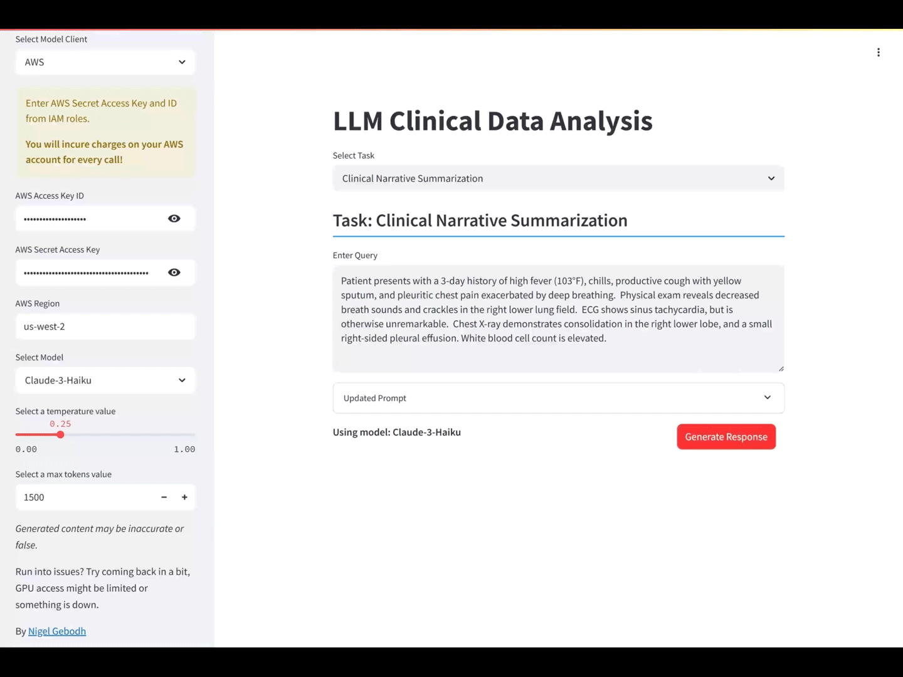

Building LLM Clinical Data Analytics Pipelines with AWS Bedrock
Leveraging LLMs like Claude and Gemma for clinical data analysis
LLM
NLP
AWS
Bedrock
Claude
Gemma
Llama
Math
Author
Nigel Gebodh
Published
April 11, 2025
Image by FLUX.1 and Nigel Gebodh.
Large Language Models (LLMs) have transformed the way un/structured data analytics is performed.
Here we leverage prompt engineering techniques and LLMs on Amazon Web Services (AWS) Bedrock (and Hugging Face) to build an analytics pipeline specific to healthcare applications with clinical data.
You can jump straight to the application and experiment with different clinical analytics scenarios/tasks here.

LLM clinical data analysis app using Anthropic’s Claude-3 Haiku.
What exactly is Prompt Engineering?
Prompt Engineering
Prompt Engineering:
Is the process of creating a prompt or input (i.e. text, audio, image, etc.) to a Generative AI model or LLM in order to retrieve or guide an output.
It generally involves crafting systematic instructions that guide an LLM to effectively perform a task.
Anatomy of Prompts
There are several key aspects to effectively creating a prompt to feed to an LLM. We’ll leverage combinations of these prompt components in our data analysis pipeline.
These are some of the basic prompt aspects (You can test them with different LLMs here):
Directive
The user’s intent for the LLM. These can be explicitly stated as an instruction or implied with the text format or examples provided (one example → referred to as one-shot)
Example: We want a direct set of information returned
Explicit: Instruction given on what output to produce
INPUT: Generate a list of the five longest rivers in the world.
OUTPUT: Nile River, Amazon River, Yangtze River, Mississippi River, Yenisei River
Implicit: Task implied with structure of the text
INPUT: New York City: United States Paris:
OUTPUT: France
Output Formatting
If a structured output is needed (JSON, CSV, XML etc.) from the LLM, specifying and defining the desired output guides the model to return the desired format. This is also helpful for evaluating a model’s performance if you have a structured ground truth reference/expected output to compare to the models output.
Example: We want JSON structured (basically a nested dictionary) information returned. We can give an example or have the LLM extract and classify the information to JSON tags (dict keys).
INPUT: Return the following text in `JSON` format: My name is Sam Mitra. I’m currently 28 and I live in Redmond, WA. I have 2 dogs and 1 cat.
These are instructions that control the LLM’s output style by including descriptive adjectives like “clear”, “concise”, “casual”, or “professional” in our prompts, which directly affect the vocabulary used.
Example: We want a clear, concise definition of what a dog is
INPUT: Give a clear and concise definition of what a dog is
OUTPUT: A dog is a domesticated carnivorous mammal (Canis lupus familiaris) that belongs to the family Canidae.
Example:
We want a casual, friendly definition of what a dog is
INPUT: Give a casual and friendly definition of what a dog is
OUTPUT: Dogs are basically the best! They're furry, four-legged friends that are all about giving you love, snuggles, and slobbery kisses.
Role
This is a persona or perspective that you define the LLM to have in producing outputs. This can influence the output style and content returned.
Example: Define the LLM’s role as a “biomedical engineer and medical doctor”
INPUT: As a biomedical engineer and medical doctor, give a short, concise explanation of what sea sickness is.
OUTPUT: Sea sickness, also known as motion sickness, is a complex phenomenon resulting from the mismatch between the vestibular system's perception of motion and the visual and proprioceptive systems' input.
Example: Define the LLM’s role as a “dog”
INPUT: As a dog, give a short, concise explanation of what sea sickness is.
OUTPUT: WOOF WOOF! whine Oh no, oh no! Sea sickness is when my hooman gets all wobbly and queasy on the boat!
The Math
Effective prompt engineering relies on the fact that modern LLMs are trained on vast datasets, enabling them to understand and follow instructions.
Generally, we can think of LLMs as autoregressive functions that when given a sequence of tokens (e.g. words), produce a probability distribution for a set of next tokens. These word probabilities are then fed through a Softmax function which helps to normalize the probability distribution and select the token with the highest probability (greedy decoding). See (Gebodh, 2024b) for a dive into Softmax calcualtions and LLM temperature variations.
What is the conditional probability of \(\mathbf{Y}\) given input \(\mathbf{X}\), where \(\mathbf{X}\) are tokens that can be text, images, video, audio etc.
We calculate the probability of the output (\(\mathbf{Y}\)) by multiplying (\(\prod\)) the probabilities of each of the tokens (\(t\)), using previous output tokens (\(y_{1:t-1}\)) and the input (\(\mathbf{X}\)).
Prompting
Prompting
For prompt engineering we can think of the input (\(\mathbf{X}\)) as having two parts:
\(\mathcal{T}\) - the prompt, meaning the general instruction or task you want the LLM to do
Example \(\mathcal{T}\): Translate from English to French:
\(\mathcal{Q}\) - the specific example or question that you’re passing to the LLM
Example \(\mathcal{Q}\): The cat and the dog sleep
The full input with returned output would be:
Input:\(\mathcal{T}\), \(\mathcal{Q}\): Translate from English to French: The cat and the dog sleep
Output:\(\mathbf{Y}\) or \(\mathbf{A}\): Le chat et le chien dorment
We can rewrite our general LLM parameterization as:
Note: The calculations stop when an end-of-sequence token (i.e. <EOS> or <|endoftext|>) is generated.
Prompt Templating
Prompt Templating
We can generalize the equation even more by thinking of the prompt (\(\mathcal{T}\)) as a function or a template that takes in different questions/queries (\(\mathcal{Q} \to x^{*}\)). We can represent the prompt template as \(\mathcal{T(\cdot)}\) and when a question/query is plugged in we get \(\mathcal{T(x^{*})}\). The equation then becomes:
\(T(\cdot)\) - The template could be: What is the capital of {ENTER COUNTY}?
\(x^{*}\) - The query or question would be: France
\(\mathcal{T(x^{*})}\) - The full input would be: What is the capital of France?
\(\textcolor{SeaGreen}{\mathbf{A}}\) - The returned answer would be: Paris
Few-Shot Prompting
Few-Shot Prompting
With few-shot prompting we can think of it as just supplying the template \(\mathcal{T(\cdot)}\) with another input which are examples to use to do the task. We can represent the set of examples as \(\phi\) where:
\(z_i\) is just example \(i\) that we’re passing to the LLM with our query
\(y_i\) is the corresponding answer to the \(i^{th}\) example.
For example, for the task of getting country capitals, a 5-shot prompt (\(n\) is 5 examples, \(z_i\) - country and \(y_i\) - the country’s capital) would look like the following where \(\phi\) is: \[\begin{align*}
\phi = \{
(z_1 = Algeria, y_1 = Algiers)_{1}, \\
(z_2 =France, y_2 = Paris)_{2}, \\
(z_3 =Spain, y_3 = Madrid)_{3}, \\
(z_4 =Norway, y_4 = Oslo)_{4}, \\
(z_5 =Chile, y_5 = Santiago)_{5}, \\
\}
\end{align*}\]
\({\mathcal{T(\phi, x^{*})} }\): What is the capital of Algeria? Algiers What is the capital of France? Paris What is the capital of Spain? Madrid What is the capital of Norway? Oslo What is the capital of Chile? Santiago What is the capital of Germany?
This full prompt (\({\mathcal{T(\phi, x^{*})} }\)) would then be passed to the LLM which should return the response (\(\textcolor{SeaGreen}{\mathbf{A}}\)) Berlin.
What exactly is AWS Bedrock?
AWS Bedrock
AWS Bedrock (Amazon Web Services):
Is an Amazon product that provides a platform for leveraging Foundation Models (FM)/LLMs.
It gives access to a number of LLMs, all on one platform.
The models can be accessed through a central API (Application Programming Interface).
Bedrock abstracts away infrastructure complexities like compute and GPU provisioning, enabling easier development and experimentation with various models. Currently the Bedrock platform hosts models from Anthropic, Meta, Cohere, Mistral, AI21 etc.
AWS - Getting Started
Getting started
To begin using AWS Bedrock:
Create an AWS account.
Create an IAM user and obtain access keys (AWS Secret Access Key ID and AWS Secret Access Key - see here).
These keys are used for API authentication and should be stored securely as environment secrets or in a .env file.
Request model access in the Bedrock console.
On Bedrock we can go to Model access then request the models we want to work with. This will take a few minutes for access to be granted.
Install the boto3 Python library for API interaction with Bedrock
Bedrock uses the boto3 Python library to set up information transfer to and from AWS.
AWS - Setting up Bedrock
Setting up Bedrock
Once we have all our credentials in order we set up our connection to AWS. To establish a connection to AWS we import the:
boto3 library to set up our runtime connection
os library to get our environment secrets (API ID and key)
Import libraries:
import boto3import os
Set up our AWS Bedrock access:
# Configure AWS credentialsbedrock_runtime = boto3.client( service_name='bedrock-runtime', region_name=os.environ['AWS_DEFAULT_REGION'], #Region where the Bedrock service is running e.g. us-east-1 aws_access_key_id=os.environ['AWS_ACCESS_KEY_ID'], #AWS Access Key ID aws_secret_access_key=os.environ['AWS_SECRET_ACCESS_KEY'] #AWS Secret Access Key)bedrock_runtime
<botocore.client.BedrockRuntime at 0x78c610c21750>
AWS - LLM API Templates
LLM API Templates
Bedrock’s API required model-specific request formats (in some cases it still does), varying significantly between models like Llama 3.3 70B Instruct and Claude V2.
Example Request Differences:
Llama 3.3 70B Instruct:
{"modelId": "meta.llama3-3-70b-instruct-v1:0","contentType": "application/json","accept": "application/json","body": "{\"prompt\":\"this is where you place your input text\",\"max_gen_len\":512,\"temperature\":0.5,\"top_p\":0.9}"}
To streamline model interaction, Bedrock introduced the Converse API, providing a unified format. Now, you only need to specify:
modelId: The model identifier.
prompt: The input text.
model parameters: Settings like max_tokens_to_sample and temperature.
AWS - Example
Scenario: We want to ask an LLM about the symptoms of pneumonia using Anthropic’s Claude model on AWS Bedrock.
Define the User’s Question: First, we create the user’s question, which we’ll call the user_message or query.
# Start a conversation with the user message.user_message="What are the symptoms of pneumonia?"
Specify the Model: Next, we choose the LLM we want to use. In this case, we’ll use Anthropic’s Claude 3 Haiku.
# Set the model ID, e.g., Claude 3 Haiku.model_id ="anthropic.claude-3-haiku-20240307-v1:0"
Prepare the Conversation Format: The Bedrock API expects the input in a specific “conversation” format, where each message has a role (either “user” or “assistant”) and content.
Send the Request and Receive the Response: We use the bedrock_runtime.converse function to send the conversation and inference_config to the specified model_id.
Encapsulate in a Function: We can create a function invoke_model to encapsulate these steps, making it easier to reuse (see code in ‘Putting it all together’ section). We’ll display the User Query and LLM Response in chat bubbles so it’s easier to follow the exchange of information.
invoke_model
#Define a helper function to call the model and get a responsedef invoke_model(model_id, user_message, conversation=None, inference_config=None, verbose=False):# # Set the model ID, e.g., Claude 3 Haiku.# model_id = "anthropic.claude-3-haiku-20240307-v1:0"# # Start a conversation with the user message.# user_message = "Describe the python language."if conversation isNone: conversation = [ {"role": "user","content": [{"text": user_message}], } ]# Set the inference configuration.if inference_config isNone: inference_config = {"maxTokens": 512,"temperature": 0.5,"topP": 0.9, }try:# Send the message to the model, using a basic inference configuration. response = client.converse( modelId=model_id, messages=conversation, inferenceConfig=inference_config )# Extract and print the response text. response_text = response["output"]["message"]["content"][0]["text"]if verbose:print(f"Request: {user_message}")print(f"Response: {response_text}")return response_textexcept (Exception) as e:print(f"ERROR: Can't invoke '{model_id}'. Reason: {e}") exit(1)# Start a conversation with the user message. user_message = user_query ="What are the symptoms of pneumonia?"#Pass the message to the model model_id ="anthropic.claude-3-haiku-20240307-v1:0" response = model_response = invoke_model(model_id, user_message)#Display the user query and model response display_chat_bubble(user_query, sender="user") display_chat_bubble(model_response, sender="model")
Chat Bubble
User Query
What are the symptoms of pneumonia?
Chat Bubble
LLM Response
The main symptoms of pneumonia include:
Cough - This is often the first symptom and may produce mucus or phlegm. The cough may be dry at first.
Fever and chills - Pneumonia often causes a high fever, sometimes over 102°F (39°C).
Difficulty breathing - Breathing may be faster and shallower than normal. Patients may feel short of breath, especially with activity.
Chest pain - There is often a sharp or stabbing chest pain, especially when breathing deeply or coughing.
Fatigue - Pneumonia can cause significant tiredness and weakness.
Other potential symptoms include:
Nausea and vomiting
Diarrhea
Confusion, especially in older adults
The specific symptoms can vary depending on the type of pneumonia, the causative agent, and the patient's age and overall health. Symptoms are usually more severe in the elderly, young children, and those with underlying medical conditions.
Seeking medical attention is important, as pneumonia can be a serious and potentially life-threatening condition that requires prompt treatment.
What exactly is Clinical Data?
Clinical Data
Clinical or medical data encompasses a collection of health information generated through patients’ interaction with healthcare systems. This can include:
Electronic Health Records (EHRs) containing patient demographics, medical history, diagnoses, medications, treatment plans, laboratory results, and imaging reports
Clinical trial data and research findings
Claims and billing information
Data from wearable devices and remote monitoring systems
Clinical data is particularly complex because it combines structured data (like tabular diagnostic codes and lab values) with unstructured data (such as clinical notes, radiology reports, and patient narratives). This complexity makes it both challenging and valuable for analytical purposes.
This section demonstrates clinical data analysis using AWS Bedrock. We’ll explore how to extract insights from un/structured clinical data using advanced prompt engineering.
We’ll cover these clinical analytics use cases:
Clinical Narrative Summarization: Few-shot prompting for concise medical summaries.
Diagnosis Generation: Chain-of-thought prompting for preliminary diagnoses.
Clinical Classification: Zero-shot prompting for data classification.
Structured Data Extraction: XML-based prompting for targeted information retrieval.
Clinical Narrative Summarization
LLM workflow for clinical narrative summarization.
Our goal is to get the model to summarize a clinical report.
Here we’ll use a few-shot prompt to get the model to understand the task by showing it examples of the task. The task will be to summarize some medical text into:
Key Findings
Recommendations
We will provide the model with these examples:
Example 1:
INPUT: MRI of the right knee demonstrates a complex tear of the posterior horn and body of the medial meniscus. There is moderate joint effusion and mild chondromalacia of the patellofemoral compartment. The anterior and posterior cruciate ligaments are intact.
OUTPUT: Key Findings: Complex tear of medial meniscus (posterior horn and body); Moderate joint effusion; Mild patellofemoral chondromalacia Recommendations: Orthopedic consultation; Consider arthroscopic evaluation and treatment
Example 2:
INPUT: Chest X-ray shows clear lung fields bilaterally with no evidence of consolidation, effusion, or pneumothorax. The heart size is within normal limits. No acute cardiopulmonary process identified.
OUTPUT: Key Findings: Clear lung fields; Normal heart size; No acute cardiopulmonary process Recommendations: No further imaging needed at this time
Model tasked to summarize text:
INPUT: Patient presents with a 3-day history of high fever (103°F), chills, productive cough with yellow sputum, and pleuritic chest pain exacerbated by deep breathing. Physical exam reveals decreased breath sounds and crackles in the right lower lung field. ECG shows sinus tachycardia, but is otherwise unremarkable. Chest X-ray demonstrates consolidation in the right lower lobe, and a small right-sided pleural effusion. White blood cell count is elevated.
OUTPUT:
What do we expect?
The model should learn from the examples to extract ailment-related information (e.g., elevated WBC, high fever) and provide appropriate treatment recommendations.
For example an output like below would be consistent with what we expect:
OUTPUT: Key Findings: Right lower lobe consolidation; Right-sided pleural effusion; High fever; Decreased breath sounds and crackles; Elevated WBC. Recommendations: Initiate broad-spectrum antibiotics for bacterial pneumonia; Consider sputum cultures; Monitor oxygen saturation; Pain management; Follow-up chest X-ray to assess resolution.
Model Output
Code
# Few-shot learning example for medical report summarization# Define the examples and queryexample_1 ="""INPUT: MRI of the right knee demonstrates a complex tear of the posterior horn and body of the medial meniscus. There is moderate joint effusion and mild chondromalacia of the patellofemoral compartment. The anterior and posterior cruciate ligaments are intact.OUTPUT:**Key Findings:** Complex tear of medial meniscus (posterior horn and body); Moderate joint effusion; Mild patellofemoral chondromalacia**Recommendations:** Orthopedic consultation; Consider arthroscopic evaluation and treatment"""example_2 ="""INPUT:Chest X-ray shows clear lung fields bilaterally with no evidence of consolidation, effusion, or pneumothorax. The heart size is within normal limits. No acute cardiopulmonary process identified.OUTPUT:**Key Findings:** Clear lung fields; Normal heart size; No acute cardiopulmonary process**Recommendations:** No further imaging needed at this time"""query ="""INPUT:Patient presents with a 3-day history of high fever (103°F), chills, productive cough with yellow sputum, and pleuritic chest pain exacerbated by deep breathing. Physical exam reveals decreased breath sounds and crackles in the right lower lung field. ECG shows sinus tachycardia, but is otherwise unremarkable. Chest X-ray demonstrates consolidation in the right lower lobe, and a small right-sided pleural effusion. White blood cell count is elevated."""# Combine the examples and query into a single prompt# We'll use f-strings to insert the content from the examples and query into the full prompt.few_shot_prompt =f"""Task: Summarize the following medical report into key findings and recommendations.Follow the format of the examples strictly. Make the summary concise and actionable.The key findings should be short and to the point.The key findings should be less than 5 words.The recommendations should be clear and specific.The summary should be in the following format:**Key Findings:** [colon-separated list of key findings]**Recommendations:** [colon-separated list of recommendations]{example_1}{example_2}Now summarize this medical report:{query}"""print(few_shot_prompt)
Code
#Pass the few-shot prompt to the modelmodel_id ="anthropic.claude-3-haiku-20240307-v1:0"response = invoke_model(model_id, few_shot_prompt)
Code
#Display the user query and model responsedisplay_chat_bubble(user_query, sender="user")display_chat_bubble(model_response, sender="model")
Chat Bubble
User Query
Task: Summarize the following medical report into key findings and recommendations.
Follow the format of the examples strictly. Make the summary concise and actionable.
The key findings should be short and to the point.
The key findings should be less than 5 words.
The recommendations should be clear and specific.
The summary should be in the following format:
Key Findings: [colon-separated list of key findings]
Recommendations: [colon-separated list of recommendations]
INPUT:
MRI of the right knee demonstrates a complex tear of the posterior horn and body of the medial meniscus.
There is moderate joint effusion and mild chondromalacia of the patellofemoral compartment.
The anterior and posterior cruciate ligaments are intact.
OUTPUT:
Key Findings: Complex tear of medial meniscus (posterior horn and body); Moderate joint effusion; Mild patellofemoral chondromalacia
Recommendations: Orthopedic consultation; Consider arthroscopic evaluation and treatment
INPUT:
Chest X-ray shows clear lung fields bilaterally with no evidence of consolidation, effusion, or pneumothorax.
The heart size is within normal limits.
No acute cardiopulmonary process identified.
OUTPUT:
Key Findings: Clear lung fields; Normal heart size; No acute cardiopulmonary process
Recommendations: No further imaging needed at this time
Now summarize this medical report:
INPUT:
Patient presents with a 3-day history of high fever (103°F), chills, productive cough with yellow sputum, and pleuritic chest pain exacerbated by deep breathing.
Physical exam reveals decreased breath sounds and crackles in the right lower lung field.
ECG shows sinus tachycardia, but is otherwise unremarkable.
Chest X-ray demonstrates consolidation in the right lower lobe, and a small right-sided pleural effusion. White blood cell count is elevated.
Chat Bubble
LLM Response
Key Findings: High fever; Productive cough; Right lower lobe consolidation; Pleural effusion; Elevated WBC
Recommendations: Initiate antibiotic therapy; Consider chest CT scan; Monitor for clinical improvement
What do we see?
The model’s output aligned with the prompt, providing contextually accurate Key Findings and Recommendations for the pneumonia scenario, and respecting the defined response parameters.
Diagnosis Generation
LLM workflow for diagnosis generation.
Our goal is to provide a preliminary medical diagnosis of a patient based on their symptoms.
Here we’ll use a chain-of-thought prompting to guide the model through a systematic reasoning process.
We will define the following steps for the model to follow to arrive at the answer:
Step 1: List potential diagnoses that could explain these symptoms.
Step 2: For each potential diagnosis, evaluate the likelihood based on the symptom presentation.
Step 3: Identify what additional tests or information would be most valuable for differential diagnosis.
Step 4: Recommend a preliminary diagnosis and next steps.
Data provided to the model:
Patient’s symptoms:
Persistent cough for 3 weeks, after returning from a trip to a humid tropical country
Chest pain while breathing deeply
Low-grade fever (99.5°F)
Fatigue and decreased appetite
What do we expect?
The given symptoms are consistent with pneumonia (although it overlaps with other conditions). We would expect the model to consider pneumonia as a potential diagnosis and provide treatment recommendations consistent with pneumonia or other similar conditions. We’ll look at Step 2 to verify that pneumonia was considered in coming to a potential diagnosis.
Model Output
Code
# Chain-of-Thought Prompting example for medical diagnosissymptoms ="""- Persistent cough for 3 weeks, after returning from a trip to a humid tropical country.- Chest pain while breathing deeply- Low-grade fever (99.5°F)- Fatigue and decreased appetite"""cot_prompt =f"""You are a medical expert. You are given the following patient's symptoms.{symptoms}Follow these steps to get to a preliminary diagnosis and recommendations:Step 1: List potential diagnoses that could explain these symptoms.Step 2: For each potential diagnosis, evaluate the likelihood based on the symptom presentation.Step 3: Identify what additional tests or information would be most valuable for differential diagnosis.Step 4: Recommend a preliminary diagnosis and next steps.Your response should be in the following format: **Step 1:** [potential diagnoses]**Step 2:** [likelihood for each diagnosis]**Step 3:** [brief list of tests or information]**Step 4:** [preliminary diagnosis]**Diagnosis:** [diagnosis]**Likelihood:** [likelihood]**Next steps:** [next steps]"""print(cot_prompt)
Code
#Pass the CoT prompt to the modelmodel_id ="anthropic.claude-3-haiku-20240307-v1:0"response = invoke_model(model_id, cot_prompt)
Code
#Display the user query and model responsedisplay_chat_bubble(user_query, sender="user")display_chat_bubble(model_response, sender="model")
Chat Bubble
User Query
You are a medical expert. You are given the following patient's symptoms.
Persistent cough for 3 weeks, after returning from a trip to a humid tropical country.
Chest pain while breathing deeply
Low-grade fever (99.5°F)
Fatigue and decreased appetite
Follow these steps to get to a preliminary diagnosis and recommendations:
Step 1: List potential diagnoses that could explain these symptoms.
Step 2: For each potential diagnosis, evaluate the likelihood based on the symptom presentation.
Step 3: Identify what additional tests or information would be most valuable for differential diagnosis.
Step 4: Recommend a preliminary diagnosis and next steps.
Your response should be in the following format: Step 1: [potential diagnoses]
Step 2: [likelihood for each diagnosis]
Step 3: [brief list of tests or information]
Step 4: [preliminary diagnosis]
Diagnosis: [diagnosis]
Likelihood: [likelihood]
Next steps: [next steps]
Chat Bubble
LLM Response
As a medical expert, I will follow the steps you provided to arrive at a preliminary diagnosis and recommendations for the given patient's symptoms.
Step 2: Likelihood of Potential Diagnoses
- Pneumonia: High likelihood, as the patient has a persistent cough, chest pain, and low-grade fever, which are common symptoms of pneumonia.
- Tuberculosis: Moderate likelihood, as the patient has recently returned from a humid tropical country, which is a risk factor for tuberculosis.
- Fungal lung infection: Moderate likelihood, as the patient has recently returned from a humid tropical country, which is a risk factor for certain fungal infections.
- Lung cancer: Low likelihood, as the patient's symptoms are more indicative of an infectious or inflammatory process.
- Pulmonary embolism: Low likelihood, as the patient does not have any known risk factors for this condition.
Step 3: Additional Tests or Information
- Chest X-ray or CT scan to evaluate the lungs and identify any abnormalities
- Sputum culture or acid-fast bacilli (AFB) test to check for bacterial or mycobacterial infections
- Blood tests, including complete blood count (CBC) and inflammatory markers (e.g., C-reactive protein, erythrocyte sedimentation rate)
- Travel history and potential exposures during the trip to the humid tropical country
Step 4: Preliminary Diagnosis and Next Steps
Preliminary Diagnosis: Pneumonia
Likelihood: High
Next Steps:
1. Order a chest X-ray or CT scan to assess the lungs and identify any signs of pneumonia or other pulmonary abnormalities.
2. Obtain sputum samples for culture and AFB testing to rule out bacterial or mycobacterial infections, such as tuberculosis.
3. Perform blood tests, including a CBC and inflammatory markers, to support the diagnosis of pneumonia and monitor the patient's response to treatment.
4. Gather more information about the patient's recent travel history and potential exposures during the trip to the humid tropical country
What do we see?
We see that the model was able to follow the steps we defined in order to get to a preliminary diagnosis and provide some next steps. Based on the symptoms the model identified that the patient has a high likelihood of having pneumonia as we expected.
Clinical Classification
LLM workflow for clinical classification.
Our goal is to classify medical data into different categories using zero-shot prompting. Here we’ll pass the model a prompt with the category labels and the data to be classified.
Here’s an example of what we’ll be passing to the model:
medical_text_1 = “Patient presents with a fever of 103.5 degrees Fahrenheit, accompanied by severe chills, rigors, body aches, and a persistent throbbing headache. The patient reports feeling disoriented, has a flushed face, and exhibits petechiae on the chest and extremities. White blood cell count is elevated. Patient reports recent lower backpain on their left side and some blood in their urine.”
In this case the classification should be Infection based on the information provided.
What do we expect?
In each case we would expect that the model would recognize the classic symptoms presented in the clinical information. From there it should be able to link that information to one of the three classes provided, selecting the most likely class.
Model Output
Code
# Zero-shot learning example for medical classification# Example 1: Fever with More Symptomsmedical_text_1 ="""Patient presents with a fever of 102.5 degrees Fahrenheit, accompanied by severe chills, body aches,and a persistent headache. The patient reports feeling disoriented and has a flushed face."""medical_text_1 =" ".join(medical_text_1.splitlines())categories_1 = ["Infection", "Heat Stroke", "Drug Reaction"]# Example 2: Broken Bone with Injury Detailsmedical_text_2 ="""Patient sustained a fall from a ladder, with immediate onset of severe pain and swelling in the lower leg. X-ray shows a complete, displaced fracture of the tibia, with evidence of soft tissue injury."""medical_text_2 =" ".join(medical_text_2.splitlines())categories_2 = ["Fracture", "Sprain", "Muscle Strain"]# Example 3: Fever, Cough, Nasal Congestion Symptomsmedical_text_3 ="""Patient presents with a sudden onset of high fever (102-104°F), accompanied by severe chills, intense muscle aches (myalgia), and a persistent, dry cough. The patient reports a severe headache, significant fatigue, and a sore throat. Nasal congestion is minimal. The patient reports that many people in their workplace have been experiencing similar symptoms recently."""medical_text_3 =" ".join(medical_text_3.splitlines())categories_3 = ["Common Cold", "Flu", "Allergies"]def zero_shot_classification_prompt(text, categories):import textwrap# Combine the examples into a single prompt prompt = (f"Task: Classify the following medical cases into the correct category.\n"f"Choose the most appropriate category from the list provided: {', '.join(categories)}\n"f"\n"f"Text: {text}\n"f"\n"f"Response format:\n"f"**Category:** [selected category]\n"f"**Confidence:** [high/medium/low]\n"f"**Reasoning:** [brief explanation]")return promptzero_shot_prompt = zero_shot_classification_prompt(text = medical_text_1, categories = categories_1)print(zero_shot_prompt)
● Example 1
Code
#Pass the zero-shot prompt to the modelmodel_id ="anthropic.claude-3-haiku-20240307-v1:0"zero_shot_prompt = zero_shot_classification_prompt(text = medical_text_1, categories = categories_1)response = invoke_model(model_id, zero_shot_prompt)
Code
#Display the user query and model responsedisplay_chat_bubble(user_query, sender="user")display_chat_bubble(model_response, sender="model")
Chat Bubble
User Query
Task: Classify the following medical cases into the correct category.
Choose the most appropriate category from the list provided: Infection, Heat Stroke, Drug Reaction
Text: Patient presents with a fever of 102.5 degrees Fahrenheit, accompanied by severe chills, body aches, and a persistent headache. The patient reports feeling disoriented and has a flushed face.
Category: Infection
Confidence: High
Reasoning: The patient's symptoms, including fever, chills, body aches, and headache, are typical of an infection. The disorientation and flushed face could also be indicative of an underlying infection, rather than heat stroke or a drug reaction.
● Example 2
Code
#Pass the zero-shot prompt to the modelmodel_id ="anthropic.claude-3-haiku-20240307-v1:0"zero_shot_prompt = zero_shot_classification_prompt(text = medical_text_2, categories = categories_2)response = invoke_model(model_id, zero_shot_prompt)
Code
#Display the user query and model responsedisplay_chat_bubble(user_query, sender="user")display_chat_bubble(model_response, sender="model")
Chat Bubble
User Query
Task: Classify the following medical cases into the correct category.
Choose the most appropriate category from the list provided: Fracture, Sprain, Muscle Strain
Text: Patient sustained a fall from a ladder, with immediate onset of severe pain and swelling in the lower leg. X-ray shows a complete, displaced fracture of the tibia, with evidence of soft tissue injury.
Category: Fracture
Confidence: High
Reasoning: The given description indicates that the patient sustained a fall from a ladder, resulting in severe pain and swelling in the lower leg. The X-ray findings show a complete, displaced fracture of the tibia, which is a clear indication of a fracture. The presence of soft tissue injury further supports the diagnosis of a fracture.
● Example 3
Code
#Pass the zero-shot prompt to the modelmodel_id ="anthropic.claude-3-haiku-20240307-v1:0"zero_shot_prompt = zero_shot_classification_prompt(text = medical_text_3, categories = categories_3)response = invoke_model(model_id, zero_shot_prompt)
Code
#Display the user query and model responsedisplay_chat_bubble(user_query, sender="user")display_chat_bubble(model_response, sender="model")
Chat Bubble
User Query
Task: Classify the following medical cases into the correct category.
Choose the most appropriate category from the list provided: Common Cold, Flu, Allergies
Text: Patient presents with a sudden onset of high fever (102-104°F), accompanied by severe chills, intense muscle aches (myalgia), and a persistent, dry cough. The patient reports a severe headache, significant fatigue, and a sore throat. Nasal congestion is minimal. The patient reports that many people in their workplace have been experiencing similar symptoms recently.
Category: Flu
Confidence: High
Reasoning: The patient's symptoms, including high fever, severe chills, intense muscle aches, persistent dry cough, headache, fatigue, and sore throat, are characteristic of the flu (influenza) rather than a common cold or allergies. The sudden onset of these symptoms and the report of similar cases in the patient's workplace further support the diagnosis of the flu.
What do we see?
As anticipated, the model accurately classified symptoms across all cases, demonstrating its ability to recognize clinical indications from diverse domains, including:
Infectious disease (Example 1)
Orthopedic trauma (Example 2)
Viral illness (Example 3)
Structured Data Extraction
LLM workflow for structured data extraction.
Our goal is to use the LLM to extract specific information from medical data, guided by XML tags.
XML’s (Extensible Markup Language) structured format is key here, making it easier for the LLM to understand the data’s organization. We use tags like <instructions> and <example> to provide direct guidance and illustrative examples. We’ll use XML tags along with one-shot learning to show the LLMs how to extract and format clinical data to be returned as an output.
For example we can use XML tags to indicate where each part of the prompt begins and ends. The example below defines 3 main parts:
The <instruction> or task that we want the model to perform.
The input data that we want the model to use, in this case a <clinical_note>.
The format that we want returned for the extracted data. Defined as <output_schema>.
<instructions> Extract the patient’s name, age, and diagnosis from the following clinical note. </instructions>
<clinical_note> Patient: John Smith, 67 years old, presented with symptoms of acute myocardial infarction. </clinical_note>
We expect that the model would be able to accurately follow the instructions given, effectively analyze the input data, correctly extract and format the data given the formatting guide.
For example, for the given input above we would expect the model to return:
clinical_note ="""Todays date is March 12th, 2025.Patient, Marty K. Martin, is a 62-year-old male with a history of hypertension, type 2 diabetes, and hyperlipidemia. Currently taking Lisinopril 20mg daily, Metformin 1000mg BID, and Atorvastatin 40mg at bedtime. Patient reports having a coronary artery bypass graft (CABG) 5 years ago.Known allergies to penicillin (hives) and sulfa drugs (rash).Vitals on admission: BP 142/88, HR 78, RR 16, Temp 98.6°F, SpO2 97% on room air.Recent HbA1c was 7.2% down from 7.8%. Patient scheduled for routine colonoscopy next month. Patient celebrated his 62nd birthday on Tuesday, March 8th, 2025.Medical record number: 87654321"""clinical_note =" ".join(clinical_note.splitlines())xml_prompt =f"""You're a medical records analyst at a Clinical Electronics Health Records company. Generate a comprehensive patient summary for our medical team.Our hospital uses structured data formats for efficient information transfer between departments. The medical team needs clear, concise, and actionable patient information.Use this clinical note for your summary:<clinical_note>{clinical_note}</clinical_note><instructions>1. Extract patient information including: Patient Name, MRN, DOB (ONLY calculate DOB if enough information is given)2. Extract and organize: Medications, Allergies, Vital Signs, and Recent Procedures3. Highlight critical values and potential drug interactions4. Format as a nested table structure for easy reference</instructions>Please include all relevant information and maintain the nested table structure in your summary.Replace missing data with N/A.Make your tone clinical and precise. Follow this structure exactly and only return the formatted output:<formatting_example>**PATIENT SUMMARY****Patient**: John Doe **MRN**: 12345678 **DOB**: 01/15/1965**Exam Date**: 06/12/2020**MEDICATIONS**| Medication | Dosage | Frequency | Route | Indication ||------------|--------|-----------|-------|------------|| Lisinopril | 20mg | Daily | PO | HTN |**ALLERGIES**| Allergen | Reaction | Severity ||------------|-----------|-----------|| Penicillin | Urticaria | Moderate |**VITAL SIGNS** (Date: 03/15/2025)| Parameter | Value | Status ||-----------------|------------|-----------|| BP | 132/78 | WNL || Heart Rate | 88 bpm | WNL || Temperature | 99.1°F | ELEVATED || Oxygen Sat | 97% | WNL |**LAB VALUES**| Test | Value | Units | Date ||-------|-------|-------|-----------||Glucose| 70 | mg/dL | 12/12/2024|**RECENT & SCHEDULED PROCEDURES**| Procedure | Date | Provider | Key Findings ||---------------|------------|----------|--------------|| Heart Surgery | Next month | Dr. Smith| N/A |</formatting_example>"""
Code
#Pass the few-shot prompt to the modelmodel_id ="anthropic.claude-3-haiku-20240307-v1:0"response = invoke_model(model_id, xml_prompt)
Code
#Display the user query and model responsedisplay_chat_bubble(user_query, sender="user")display_chat_bubble(model_response, sender="model")
Chat Bubble
User Query
You're a medical records analyst at a Clinical Electronics Health Records company.
Generate a comprehensive patient summary for our medical team.
Our hospital uses structured data formats for efficient information transfer between departments.
The medical team needs clear, concise, and actionable patient information.
Use this clinical note for your summary:
Todays date is March 12th, 2025. Patient, Marty K. Martin, is a 62-year-old male with a history of hypertension, type 2 diabetes, and hyperlipidemia. Currently taking Lisinopril 20mg daily, Metformin 1000mg BID, and Atorvastatin 40mg at bedtime. Patient reports having a coronary artery bypass graft (CABG) 5 years ago. Known allergies to penicillin (hives) and sulfa drugs (rash). Vitals on admission: BP 142/88, HR 78, RR 16, Temp 98.6°F, SpO2 97% on room air. Recent HbA1c was 7.2% down from 7.8%. Patient scheduled for routine colonoscopy next month. Patient celebrated his 62nd birthday on Tuesday, March 8th, 2025. Medical record number: 87654321
1. Extract patient information including: Patient Name, MRN, DOB (ONLY calculate DOB if enough information is given)
2. Extract and organize: Medications, Allergies, Vital Signs, and Recent Procedures
3. Highlight critical values and potential drug interactions
4. Format as a nested table structure for easy reference
Please include all relevant information and maintain the nested table structure in your summary.
Replace missing data with N/A.
Make your tone clinical and precise.
Follow this structure exactly and only return the formatted output:
PATIENT SUMMARYPatient: John Doe
MRN: 12345678
DOB: 01/15/1965
Exam Date: 06/12/2020
MEDICATIONS
Medication
Dosage
Frequency
Route
Indication
Lisinopril
20mg
Daily
PO
HTN
ALLERGIES
Allergen
Reaction
Severity
Penicillin
Urticaria
Moderate
VITAL SIGNS (Date: 03/15/2025)
Parameter
Value
Status
BP
132/78
WNL
Heart Rate
88 bpm
WNL
Temperature
99.1°F
ELEVATED
Oxygen Sat
97%
WNL
LAB VALUES
Test
Value
Units
Date
Glucose
70
mg/dL
12/12/2024
RECENT & SCHEDULED PROCEDURES
Procedure
Date
Provider
Key Findings
Heart Surgery
Next month
Dr. Smith
N/A
Chat Bubble
LLM Response
PATIENT SUMMARYPatient: Marty K. Martin
MRN: 87654321
DOB: 03/08/1963
Exam Date: 03/12/2025
MEDICATIONS
Medication
Dosage
Frequency
Route
Indication
Lisinopril
20mg
Daily
PO
Hypertension
Metformin
1000mg
BID
PO
Diabetes
Atorvastatin
40mg
Bedtime
PO
Hyperlipidemia
ALLERGIES
Allergen
Reaction
Severity
Penicillin
Hives
Moderate
Sulfa Drugs
Rash
Moderate
VITAL SIGNS (Date: 03/12/2025)
Parameter
Value
Status
Blood Pressure
142/88
ELEVATED
Heart Rate
78 bpm
WNL
Temperature
98.6°F
WNL
Oxygen Saturation
97%
WNL
Respiratory Rate
16 bpm
WNL
LAB VALUES
Test
Value
Units
Date
HbA1c
7.2
%
03/12/2025
RECENT & SCHEDULED PROCEDURES
Procedure
Date
Provider
Key Findings
Coronary Artery Bypass Graft (CABG)
5 years ago
N/A
N/A
Colonoscopy
Next month
N/A
N/A
What do we see?
We see that the model was able to successfully extract all the relevant information from the provided text. This was after several rounds of refining the input prompt. After extracting the relevant information, the model followed the formatting example and correctly formatted the output data.
There are a few interesting things to note in the model’s output:
Although the term MRN does not explicitly appear in the text, the model identified that MRN stood for Medical Record Number and pulled out the listed number.
The patient’s DOB was not explicitly mentioned but context clues were given to figure out the patient’s DOB like:
Patient, Marty K. Martin, is a 62-year-old
Patient celebrated his 62nd birthday on Tuesday, March 8th, 2025
The model was able to correctly match each of the medications to their indications:
Lisinopril –> Hypertension
Metformin –> Diabetes
Atorvastatin –> Hyperlipidemia
Within the vital signs table, the model correctly identified that the blood pressure reported was ELEVATED (typical 120/80)
The patient’s HBA1C was correctly extracted and the units were correctly identified
Both the past and upcoming procedures for the patient were correctly identified and extracted with an informative date assigned.
Putting it all together
Now that we have all the components that we need we can encapsulate it into a helpful UI (User Interface) and deploy it to a cloud provider like AWS EC2, GCP, Azure, or Hugging Face (HF).
Since Hugging Face is quick and easy to set up, we can create and use a Hugging Face Space to host our app. HF also hosts a number of open-source LLMs so we can switch between Bedrock models and HF in our app. We’ll need:
UI code like Streamlit with connections to make API calls to the models (like we did above using boto). The model outputs are passed to Streamlit to present it in a nicer format.
From there we can put our Streamlit file into our Hugging Face Space.
Then run our app, which will create an interface to interact with our models.
For example, this is a simple Streamlit app using AWS Bedrock saved as app.py:
#|||||||||||||||||||||||||||||||||||||||||||||||||# PROMPT#==================================================# Setting up Prompt#%% Clinical Narative Summarization# Define the examples and querycns_example_1 ="""\**INPUT:**MRI of the right knee demonstrates a complex tear of the posterior horn and body of the medial meniscus. There is moderate joint effusion and mild chondromalacia of the patellofemoral compartment. The anterior and posterior cruciate ligaments are intact.\n**OUTPUT:**\n**Key Findings:** Complex tear of medial meniscus (posterior horn and body); Moderate joint effusion; Mild patellofemoral chondromalacia\n**Recommendations:** Orthopedic consultation; Consider arthroscopic evaluation and treatment"""cns_example_2 ="""\**INPUT:**Chest X-ray shows clear lung fields bilaterally with no evidence of consolidation, effusion, or pneumothorax. The heart size is within normal limits. No acute cardiopulmonary process identified.\n**OUTPUT:**\n**Key Findings:** Clear lung fields; Normal heart size; No acute cardiopulmonary process\n**Recommendations:** No further imaging needed at this time"""cns_query ="""\Patient presents with a 3-day history of high fever (103°F), chills, productive cough with yellow sputum, and pleuritic chest pain exacerbated by deep breathing. Physical exam reveals decreased breath sounds and crackles in the right lower lung field. ECG shows sinus tachycardia, but is otherwise unremarkable. Chest X-ray demonstrates consolidation in the right lower lobe, and a small right-sided pleural effusion. White blood cell count is elevated."""cns_query =" ".join(cns_query.splitlines())# Combine the examples and query into a single prompt# We'll use f-strings to insert the content from the examples and query into the full prompt.cns_prompt =f"""\**Task:** Summarize the following medical report into key findings and recommendations.Follow the format of the examples strictly. Make the summary concise and actionable.The the key findings should be short and to the point.The key findings should be less than 5 words.The recommendations should be clear and specific.The summary should be in the following format:\n**Key Findings:** [colon-separated list of key findings]\n**Recommendations:** [colon-separated list of recommendations]{cns_example_1}{cns_example_2}Now summarize this medical report:**INPUT:**"""#..................................................#==================================================# Task Promptstasks = {"Clinical Narrative Summarization": {"prompt": cns_prompt,"example_query": cns_query, },}def generate_prompts(task_name, query):if task_name =="Clinical Narrative Summarization": prompt =f"""\**Task:** Summarize the following medical report into key findings and recommendations.Follow the format of the examples strictly. Make the summary concise and actionable.The key findings should be short and to the point.The key findings should be less than 5 words.The recommendations should be clear and specific.The summary should be in the following format:\n**Key Findings:** [colon-separated list of key findings]\n**Recommendations:** [colon-separated list of recommendations]{cns_example_1}{cns_example_2}Now summarize this medical report:**INPUT:**{query}"""return prompt, query#_____________________________________________________
Set up AWS Bedrock
#|||||||||||||||||||||||||||||||||||||||||||||||||# AWS Bedrock#==================================================# Define AWS Helper functiondef invoke_model(model_id, user_message, conversation=None, inference_config=None, verbose=False):# # Set the model ID, e.g., Claude 3 Haiku.# model_id = "anthropic.claude-3-haiku-20240307-v1:0"# # Start a conversation with the user message.# user_message = "Describe the python language."if conversation isNone: conversation = [ {"role": "user","content": [{"text": user_message}], } ]# Set the inference configuration.if inference_config isNone: inference_config = {"maxTokens": 512,"temperature": 0.5,"topP": 0.9, }try:# Send the message to the model, using a basic inference configuration. response = client.converse( modelId=model_id, messages=conversation, inferenceConfig=inference_config )# Extract and print the response text. response_text = response["output"]["message"]["content"][0]["text"]if verbose:print(f"Request: {user_message}")print(f"Response: {response_text}")return response_textexcept (Exception) as e:print(f"ERROR: Can't invoke '{model_id}'. Reason: {e}") exit(1)#..................................................#==================================================# Configure AWS credentialsclient = boto3.client( service_name='bedrock-runtime', region_name=os.environ['AWS_DEFAULT_REGION'], #Region where the Bedrock service is running e.g. us-east-1 aws_access_key_id=os.environ['AWS_ACCESS_KEY_ID'], #AWS Access Key ID aws_secret_access_key=os.environ['AWS_SECRET_ACCESS_KEY'] #AWS Secret Access Key)model_links ={ "Claude-3-Haiku":"anthropic.claude-3-haiku-20240307-v1:0"}# Define the available modelsmodels =[key for key in model_links.keys()]model_url = model_links[model_name]#_____________________________________________________
LLM clinical data analysis app switching from AWS Bedrock to HF hosted models and using Google’s Gemma 3 - 27B.
Take Away
We showcased the power of LLMs for clinical data analysis using AWS Bedrock, demonstrating efficient data extraction, summarization, and interpretation.
We explored:
Clinical narrative summarization
Diagnosis generation
Medical data classification
Structured data extraction
These examples highlighted how effective prompt engineering enables LLMs to perform complex medical tasks. However, these outputs are meant to:
Assist, not replace, medical professionals.
Be validated by clinical experts, adhering to all relevant regulations (HIPAA, GDPR, etc.).
When properly guided, LLMs can streamline workflows and improve data management, potentially leading to better patient outcomes.
Cite as
@misc{Gebodh2025BuildingLLMClinicalDataAnalyticsPipelineswithAWSBedrock,
title = {Building LLM Clinical Data Analytics Pipelines with AWS Bedrock},
author = {Nigel Gebodh},
year = {2025},
url = {https://ngebodh.github.io/projects/Short_dive_posts/aws/aws-analysis.html},
note = {Published: April 11, 2025}
}
Brown, T. B., Mann, B., Ryder, N., Subbiah, M., Kaplan, J., Dhariwal, P., Neelakantan, A., Shyam, P., Sastry, G., Askell, A., Agarwal, S., Herbert-Voss, A., Krueger, G., Henighan, T., Child, R., Ramesh, A., Ziegler, D. M., Wu, J., Winter, C., … Amodei, D. (2020). Language models are few-shot learners. https://arxiv.org/abs/2005.14165
Qiao, S., Ou, Y., Zhang, N., Chen, X., Yao, Y., Deng, S., Tan, C., Huang, F., & Chen, H. (2023). Reasoning with language model prompting: A survey. https://arxiv.org/abs/2212.09597
Schulhoff, S., Ilie, M., Balepur, N., Kahadze, K., Liu, A., Si, C., Li, Y., Gupta, A., Han, H., Schulhoff, S., Dulepet, P. S., Vidyadhara, S., Ki, D., Agrawal, S., Pham, C., Kroiz, G., Li, F., Tao, H., Srivastava, A., … Resnik, P. (2025). The prompt report: A systematic survey of prompt engineering techniques. https://arxiv.org/abs/2406.06608